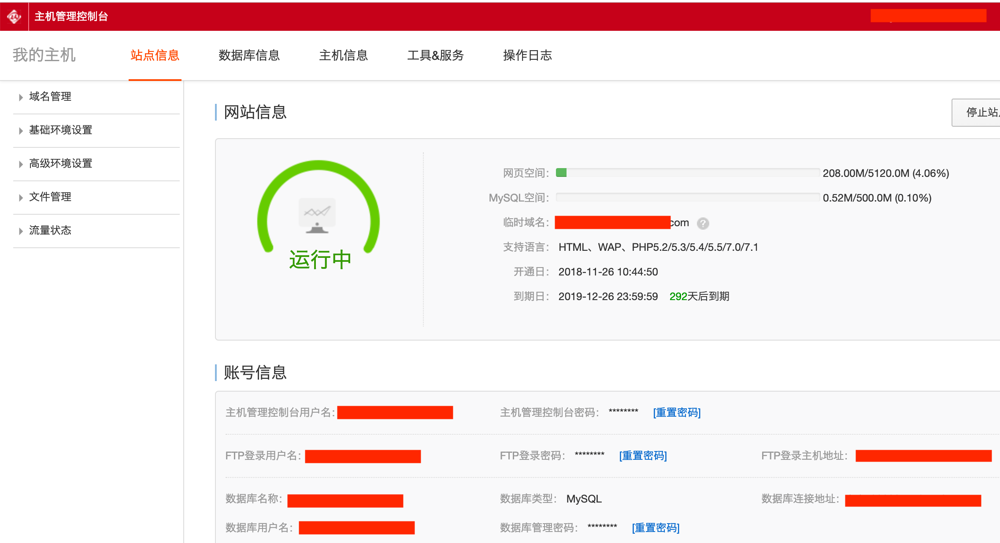
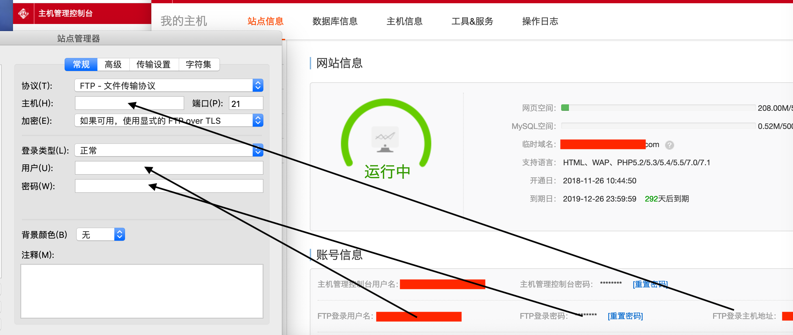
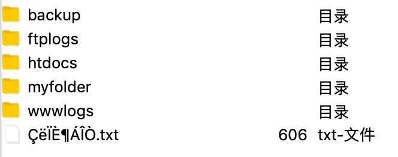
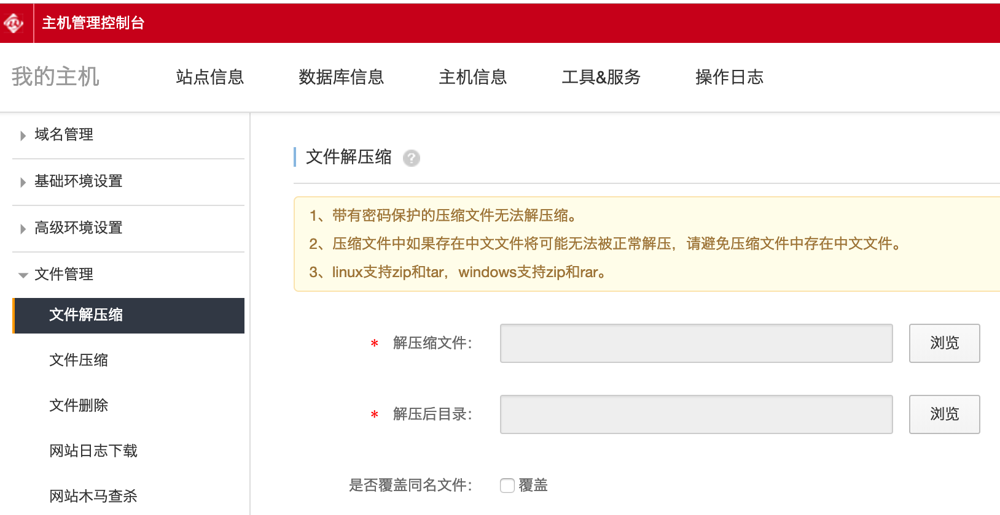
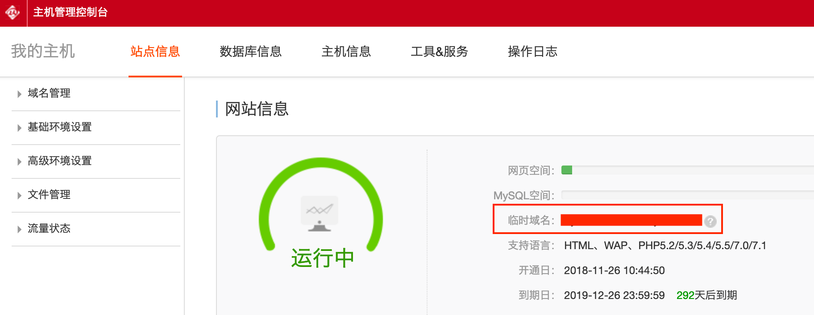
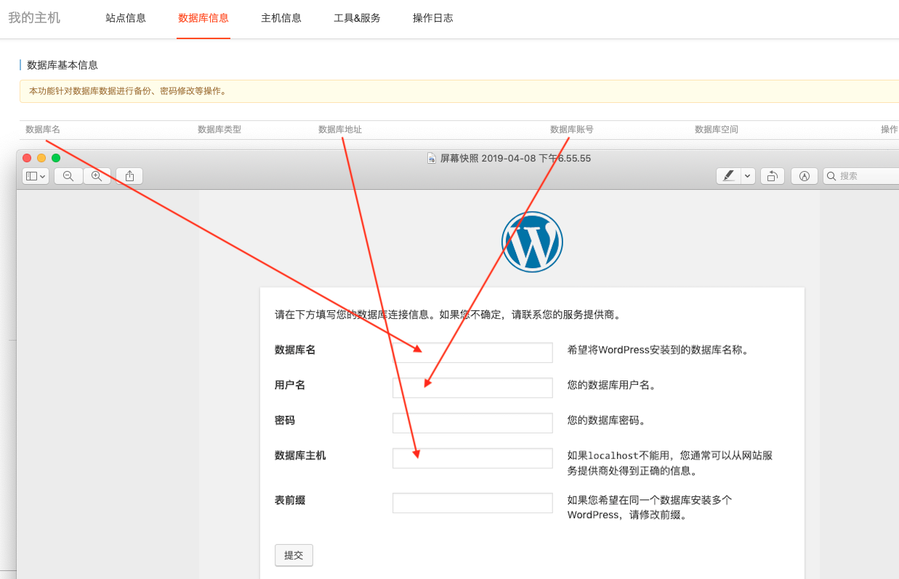

使用FTP上传WordPress
FTP是File Transfer Protocol文件传输协议，上传文件的软件有很多，我这里使用FileZilla，下载时注意Download FileZilla Client（所有平台都有）, 没有必要Download FileZilla Server, 因为阿里云里面有Server端的解压等功能，我们只是上传文件，使用Client端的就可以了。
wordpress对PHP版本有要求，所以在准备上传wordpress之前需要对主机https://cp.aliyun.com做一些操作：
- 站点信息 -> 高级环境设置 -> PHP版本设置：改为PHP7.0或以上版本
- 数据库信息 -> 重置密码(或设置密码) -> 填写好密码后，加密模式勾选为41位
接下来我们使用FileZilla把WordPress上传到主机。
首先，我们下载下来最新版的WordPresshttps://wordpress.org/download/, 这个.org是英文官网，也有中文官网，最新版的通过.org这个网站下载，下载好后接下来登录FTP。
主机地址、FTP用户名、FTP密码是登录FTP软件的必要条件，这些可以在主机控制台的站点信息里找到

打开FileZilla, 文件 --> 站点管理器 --> 新站点 --> 输入相关内容，其中端口使用默认的21，填好后点击连接，如果连接不成功，则试着加密选项中选择：只使用明文FTP(不安全)

连接成功后，其目录结构类似于：

我们主要操作的目录是htdocs目录，htdocs是网站的主目录，也是网站前台的根目录，只有这个目录下面的文件，前台才可以访问到。FTP软件看到的假如是：/htdocs/abc/123.html，那么在浏览器中看到的就是：www.xxx.com/abc/123.html。
进入到htdocs目录中，为了把WordPress上传到网站言目录，把htdocs里面的内容全部清空（全选，清空），注：可能有个文件logreport无法清除，这没有，它是系统文件，可以忽略，还有一个文件是..文件，它并不是文件，而是指上一层目录，这就像我们在命令行中打cd ../一样，也不用理会。
清理干净后把刚才下载的WordPress压缩包托入htdocs目录下，或者在左侧右键这个压缩包，然后上传。wordpress解压后约占30M。
上传完之后在主机控制台的文件管理中解压WordPress：

解压到站点根目录(/)即可，即htdocs/目录下。
解压好后，htdocs目录下大致存在4个文件：
- ..
- logreport
- wordpress
- wordpress-....zip
把这个zip文件删掉，然后把目录wordpress下面全部的内容移动到和wordpress同一层目录下（即htdocs目录下），然后这个wordpress目录就成了空目录，也可以删除掉。到此，wordpress就完成上传任务了。
主机根目录干净了，现在只有wordpress内容，接下来需要清空数据库，在主机管理面板中的数据库信息中，清空数据库。因为安装wordpress需要使用到数据库并往里面建表，所以事先应让数据库干净。
根目录清空，上传wordpress到根目录htdocs下，清空数据库，这三步之后，我们就可以安装wordpress了，由于此时可能还没有备案成功，没有备案的主机不允许通过域名解析访问，只能通过临时域名打开。因此使用临时域名操作，在主机管理控制台的站点信息里有临时域名：

打开浏览器输入临时域名，如果是第一次，会出现Wordpress的安装页面。WordPress的安装需要以下几项信息：
- 数据库名
- 数据库用户名
- 数据库密码
- 数据库主机
- 数据表前缀

这些信息都可以在主机管理控制台中的主机信息中查看，按照提示傻瓜式下一步即可。
至此，wordpress安装真正完成。
我们来看一下wordpress的文件结构，进入到站点根目录htdocs下，可以看到：
- wp-admin
- wp-content
- wp-includes
- ...
等文件目录，其中wp-content即是wordpress的根目录，我们以后上传的东西在这个目录下，wp-content下的文件目录类似于：
- languages(语言相关，多语言文件.mo会放入这里)
- plugins(插件相关)
- themes(主题相关，安装的Avada, BeTheme等主题在这里)
- upgrade(升级相关)
- uploads(上传的一些文件，比如图片)
- index.php(索引文件)
- ...